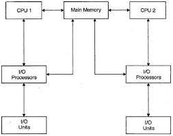

Modern multiprocessing operating systems allow many processes to be active, where each process is a “thread” of
computation being used to execute a program. One form of multiprocessing is called time-sharing, which lets many users
share computer access by rapidly switching between them. Time-sharing must guard against interference between users’ programs,
and most systems use virtual memory, in which the memory, or “address space,” used by a program may reside in secondary memory
(such as on a magnetic hard disk drive) when not in immediate use, to be swapped back to occupy the faster main computer memory on
demand. This virtual memory both increases the address space available to a program and helps to prevent programs from interfering
with each other, but it requires careful control by the operating system and a set of allocation tables to keep track of memory use.
Perhaps the most delicate and critical task for a modern
operating system is allocation of the CPU; each process is allowed to use the CPU for a limited
time, which may be a fraction of a second, and then must give up control and become suspended until its next turn.
Switching between processes must itself use the CPU while
protecting all data of the processes.
